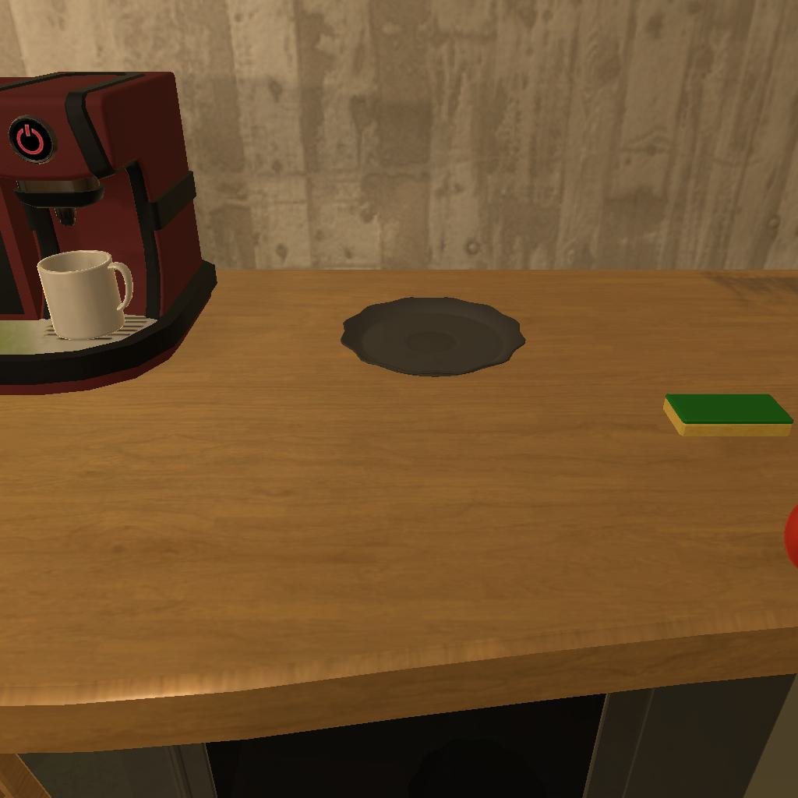

---------------------------------------------------------task: 26---------------------------------------------------------
--------------------------------------------------------------------------------------------------------------------------------------------------------------------
--------------------------------------------------------------------------------------------------------------------------------------------------------------------
Step:--------------------------------------------------------------------------3-------------------------------------------------------------------------------
----------------------------------------
VLM Prompt:
Image1:
Image2:
**Instruction**
1. Analyze the provided images to identify all visible household objects and compare the difference between images (e.h. whether the object is opened or not and taken on hand or not), focusing on those relevant to the task description "find two kettle and put them in cabinet."
2. Use the analysis of images and the task hint "The agent must find an object of the desired type, pick it up, find the correct location to place it, put it down there, then look for another object of the desired type, pick it up, return to previous location, and put it down there with the other object." to answer the question: what is the most reasonable action in the choices for the task description "find two kettle and put them in cabinet"?
3. Decide and write the answer using the template: The answer is: (i): , where i is the real number. If there is no desired object in images, search every place based on **Initial Observation** to find the object. And if no one is exactly correct, choose a similar answer.
**Initial Observation**
You are in the middle of a room. Looking quickly around you, you can see countertop (1), coffeemachine (1), cabinet (1-4), drawer (1-8), sink (1), sinkbasin (1), garbagecan (1), fridge (1), microwave (1), dresser (1), sidetable (1)
**Answer Choices**
(1): go to countertop 1
(2): go to coffeemachine 1
(3): go to cabinet 2
(4): go to drawer 1
(5): go to sink 1
(6): go to sinkbasin 1
(7): go to cabinet 3
(8): go to garbagecan 1
(9): go to cabinet 4
(10): go to drawer 2
(11): go to fridge 1
(12): go to microwave 1
(13): go to dresser 1
(14): go to sidetable 1
(15): go to drawer 3
(16): go to drawer 4
(17): go to drawer 5
(18): go to drawer 6
(19): go to drawer 7
(20): go to drawer 8
(21): close cabinet 1
(22): take plate 1 from cabinet 1
(23): take mug 1 from cabinet 1
(24): take plate 2 from cabinet 1
(25): take dishsponge 1 from cabinet 1
(26): take tomato 1 from cabinet 1
(27): examine cabinet 1
**Answer**
Let's think step by step by following the instructions.
----------------------------------------
----------------------------------------
Original Response:
Firstly, we analyze the images provided. In both Image1 and Image2, we can see a coffeemachine and a mug on the countertop, a green object which could be a sponge or a pad, and a red object that might be a tomato or an apple. There is no kettle visible in either image.
Considering the task description "find two kettle and put them in cabinet," we can see that there is no kettle on the visible countertop, and we have no indication that a kettle is inside the coffeemachine or among the other objects. Therefore, we can eliminate choices (1) and (2) as they are not relevant to the task at hand.
From the initial observation, we can see that there are multiple cabinets and drawers to search. Since the task is to find two kettles and put them in a cabinet, we should start by searching the cabinets as it is the most likely place where a kettle would be found.
Therefore, the most reasonable action from the choices given would be to start examining the cabinets one by one. Since cabinet 1 is not explicitly mentioned in the initial observation and there are no options to examine cabinet 1, we should start with the cabinet mentioned next in the sequence.
The answer is: (3): go to cabinet 2. If the kettle is not there, continue searching the other cabinets and drawers in numerical order until the kettles are found.
----------------------------------------
----------------------------------------
>>> Refine Original VLM Response and Get Pure Action: go to cabinet 2
----------------------------------------
-----------------------------------------------------------------
Running time: 263.1128091812134 seconds
Total Money: 13.33486
-----------------------------------------------------------------
-----------------------------------------------------------------
Text Observation:You arrive at loc 3. The cabinet 2 is closed.
-----------------------------------------------------------------
UNSUCCEED